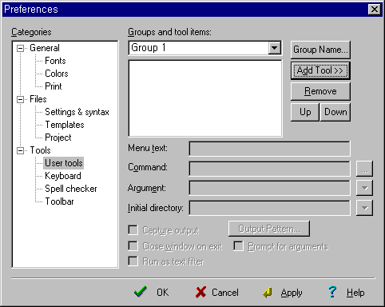
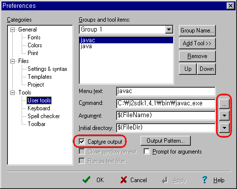
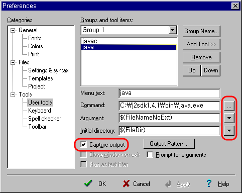

2. Add Tool>>버튼을 누르고 Program을 선택한 다음, 아래의 화면과 같이 입력한 후 OK버튼을 누른다.

3. 한번 더 Add Tool>>버튼을 누르고 Program을 선택한 다음, 아래의 화면과 같이 입력한 후 OK버튼을 누른다.

4. 이제 Editplus로 소스를 작성한 다음 ctrl+1과 ctrl+2를 누르면 컴파일과 실행을 Editplus상에서 할 수 있다.